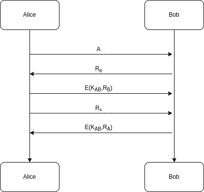
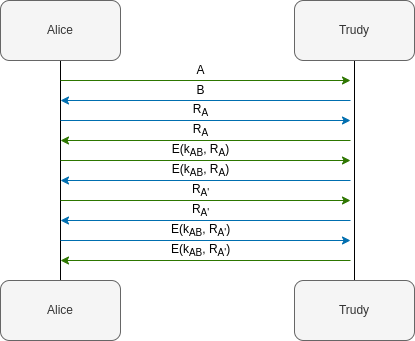
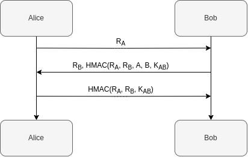
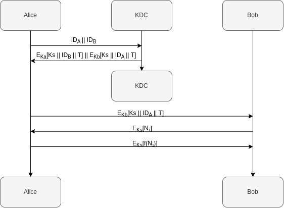
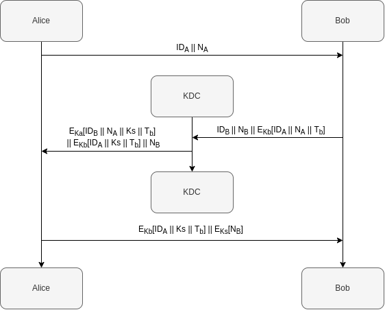

mermaid 中的 sequenceDiagram 似乎并不能够支持 htmlLabel 功能，因此这里的所有时序图都是用的外部图片。
等到 mermaid 开始支持 htmlLabel 或者 Latex 语法了再说……
在网络这样的环境下，两个人想要互相之间进行通信实际上是一件非常复杂的事情：一方面，一方需要确定另外一方的身份，保证对面不是一个恶意攻击者仿冒的；另一方面，当需要开始通信时，双方也需要确定通信的内容不会被窃听或者恶意篡改。
认证协议能够达成的也就是使得通信一方能够确定对方就是自己想要通信的对象，许多时候认证协议还能够附带着产生一个会话密钥，当然这只是认证协议的附带功能。
常见的认证也就包括了单项认证和双向认证，顾名思义。基于对称加密和非对称加密，也都有很多的实现方式（但是不一定都安全）。
# 基于共享密钥的认证
如果通信的双方已经有了一个共享的信息，那么他们就能够基于这个信息进行一个身份的认证。
当然，前提必须得是，这个信息是只有通信的双方知道。如果一个第三者知道了双方的共享信息，那么这个认证的安全性就无从保证。
协议的主要思路在于使用了挑战 - 应答协议：

首先 Alice 向 Bob 发送了自己的身份 请求建立连接。Bob 在收到 Alice 的请求之后就会去生成一个随机数 发送给 Alice，Alice 需要用共享的秘密 去对这个随机数进行加密，得到 作为结果 发送给 Bob。经过了这个过程，Bob 就能够确定 Alice 的身份。
同样的，Alice 需要对 Bob 进行身份验证，她选择一个随机数 发送给 Bob，Bob 计算 作为应答发送给 Alice。这样子 Alice 能够确定 Bob 的身份。
看上去这个协议比较完美，但是这是有问题的。
我们考虑这样一个情况：一个攻击者 Trudy 并不知道 Alice 和 Bob 的共享秘密，但是他能够去从协议的通信信息中获取到一些关键的信息。

在协议的进行过程中，Trudy 会去伪装成 Bob 和 Alice 通信。当 Alice 发送给Trudy 自己的身份信息时（绿色箭头，代表着第一个会话），Trudy 会向 Alice 再建立一个会话（蓝色箭头，代表着第二个会话）。
在第二个会话中，Alice 收到请求后会给 Trudy 发送一个随机数 作为挑战，而 Trudy 则直接将这个随机数作为第一个会话中自己对 Alice 的挑战发送会 Alice。不知情的 Alice 将自己加密后的 作为第一个会话的应答发送给 Trudy，使得 Trudy 能够完成第二个会话的挑战。
另一个方向的认证也能够被同样的方法打破。这个攻击者直接将对方的挑战发送回对面的攻击也就是挑战 - 应答协议的反射攻击。
也就是说，这个协议存在的一个问题是，攻击者可以通过控制自己的输入来完全控制对方的输出。
一个对这个协议的修补是使用 HMAC。

在这个协议中， 是同时取决于双方的输入，这样攻击者是不能够通过反射攻击来实现认证。
# 存在密钥分发中心的认证和密钥分发
另外实现认证的思路是借助于一个可信的第三方。在许多的认证和密钥分发协议中，这个可信第三方就是所谓的密钥分发中心 KDC (Key Distribution Center)。
每个用户和 KDC 之间会共享一个主密钥 (Master Key)，KDC 可以产生不同的会话密钥 (Session Key)，并通过共享的主密钥进行分发。
一个通过 KDC 进行单向认证的思路是这样的：
- Alice 将自己的身份信息，想要联系的 Bob 的身份信息 和一个随机数 组合成 发送给 KDC。
- KDC 生成一个会话密钥，将 发送给 Alice，其中 和 分别是 KDC 和 Alice 与 Bob 共享的主密钥。
- Alice 解密信息之后得到会话密钥，并将 发送给 Bob。Bob 在解密这个信息之后能够得到 Alice 的身份和会话密钥，并能够解密 Alice 发来的消息。
理论上这个协议还是不错的。一个攻击者并不能够轻易的破解 或者，因此无法简单地窃取到会话密钥。同时会话密钥中也含有身份信息，这也使得仿冒变得十分困难。
但是这个协议的问题在于不能够防止重放 ——Alice 会发送给 Bob，这个消息并未带有时间戳信息，因此存在被重放的风险。
在存在一个可信的 KDC 的条件下，密钥分发也是比较容易的事情。
Alice 可以随机选择一个会话密钥，接下来将 发送给 KDC。KDC 解密消息之后将 发送给 Bob，由此可以完成密钥的分发。
同样的问题在于，这个协议中也没有相应的时间戳信息。一个攻击者在破解了相对较弱的 之后，可以通过重放 给 KDC，使得 A 和 B 重新建立连接并能由此窃取信息。（这个攻击说实话我觉得不太现实）
# Needham-Schroeder 协议和衍生的协议
Needham-Schroeder 协议是一个基于 KDC 的密钥分发协议，能够在不安全的网络中实现密钥的分发。
这个协议的过程如下：
- Alice 将自己的身份，Bob 的身份 和一个随机数 发送给 KDC。
- KDC 生成一个会话密钥，将 发送给 Alice。
- Alice 将 发送给 Bob。
- Bob 生成一个随机数，通过会话密钥 加密得到 发送给 Alice。
- Alice 解密并对随机数 进行一个计算，将结果 发给 Bob。
整个思路还是类似于 Alice 向 KDC 去请求会话密钥，KDC 给予 Alice 一个 “凭证” 去向 Bob 建立连接。这个凭证 中实际上就是给 Bob 看的，中间包括了密钥和 Alice 的身份信息。接下来的三步实际上是 Bob 对 Alice 的单向认证，因为仅仅依靠凭证 Bob 并不能确定 Alice 就是 Alice。
这个协议能够在实现一个安全的密钥分发，但是和之前的问题一样，一部分数据是没有包含时间戳信息的，这使得这个协议会受到重放攻击。
如果一个攻击者 Trudy 获取到了以前泄漏的密钥，他便能够重放，从而对 Bob 实施攻击和欺骗。
针对这个漏洞的修补就是使用时间戳、序列号等放重放的方法。
# Denning AS 协议
Denning AS 协议在 Needham-Schroeder 协议的基础上增加了一个时间戳，使得整个协议能够防止重放。

和之前相比，协议中去掉了 Alice 选择的随机数，由 KDC 确定了一个时间戳 包含在了发送给 Alice 和 Bob 的信息中。
这样攻击者 Trudy 便无法实现重放攻击 —— 破解或者得到泄漏的 之后，时间戳 多半早已过期，这个会话密钥也早已失效。尽管这个协议可以防止重放，但是需要注意，协议的各个参与者需要时钟同步，否则无法保证时间戳的准确性。
# Neuman–Stubblebine 协议
Neuman-Stubblebine 协议使用了时间戳，但是并不必要依赖时钟的同步。另外一个优势在于，Alice 和 Bob 完成了一次协议的交互之后，在一段时间内，再次需要通信时可以不依赖 KDC 进行密钥分发。

可以看到在实现过程中，Bob 给消息加上了时间戳，随后 Alice 将消息发回之后 Bob 会对时间戳进行验证，经过这个过程两人也共享了会话密钥。
当 Alice 和 Bob 准备通信时，Alice 会选择一个随机数，将 发送给 Bob，接下来 Bob 选择一个随机数，将 发送给 Alice，Alice 收到之后计算 发送给 Bob。两人经过这个过程可以实现会话。
同时，在时间戳 过期之前，两人是可以重复建立通信而不需要依赖 KDC 的帮助。
# 参考资料
[1] 网络安全基础 —— 应用与标准（第六版），William Stallings.